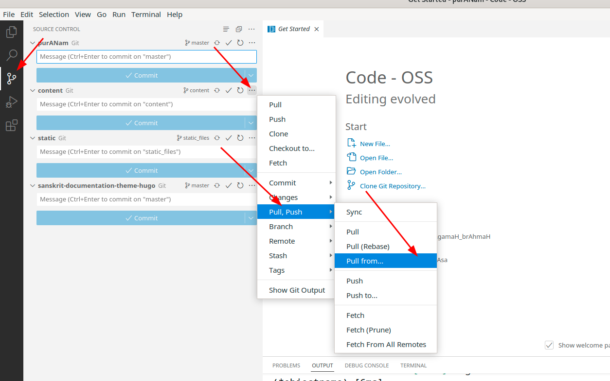
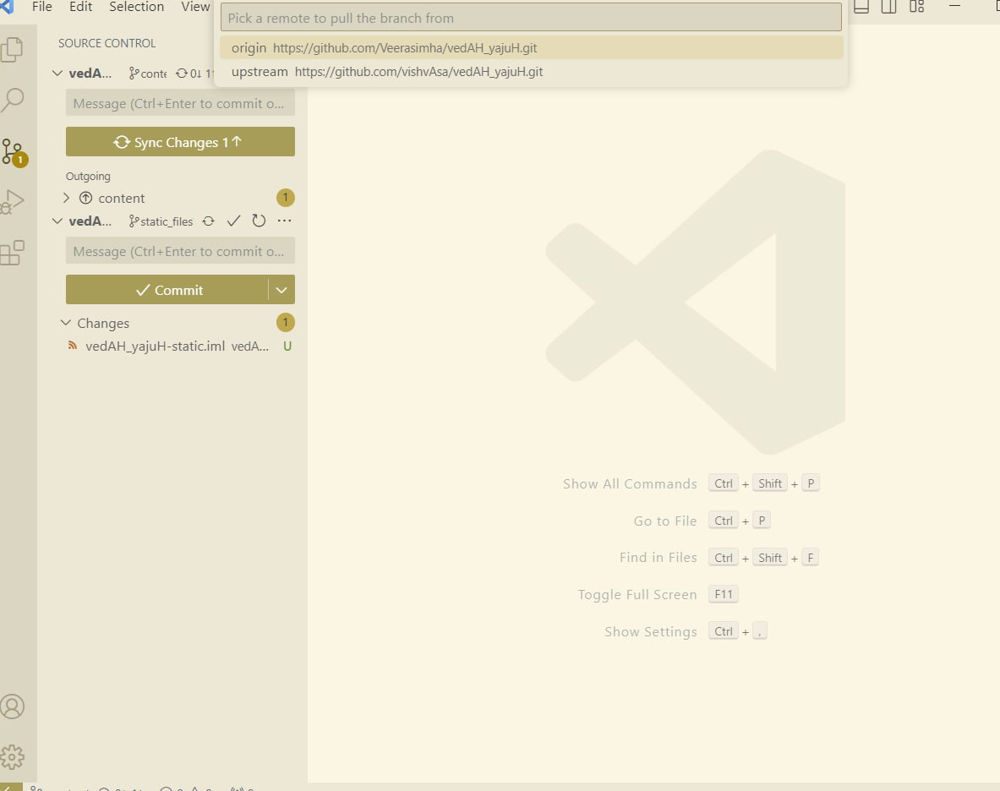
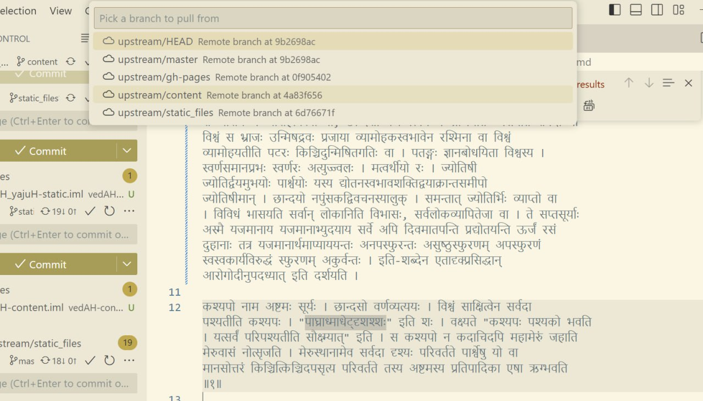

निर्देश-समीक्रिया (द्रष्टुं नोद्यम्)
- अधः XYZ इति यद् अस्ति, तस्य स्थाने स्वीयं github-नाम प्रयुङ्क्ताम्। (Below, replace ‘XYZ’ with your github username.)
- अथवैतत् प्रयुज्यतां यन्त्रम्:
- Back to Git workflow
Overview
- Get the latest files. (See “syncing” section below)
- Make changes in your editor (eg. vscode).
- Save, commit and push periodically.
Syncing with remote repository
- Every day, make sure that you’re working on the latest files by doing the below.
- If you’re changing files in
REPO-content:git pull upstream contentइति परिवर्तनानि लभ्यानि।
- If you’re changing files in
REPO-static:- by running:
git pull upstream static_files.
- by running:
Alternate procedure with VSCode
- Do the following, and select “upstream” and the appropriate branch (content or static_files).
(Click on the images below and open and view full screen.)
{kind=link}

{kind=link}

{kind=link}

Pushing file changes
- Follow instructions in “Syncing with remote repository” first.
- Then, commit and push your changes (using vscode, or github desktop).
- For tips on using vscode, please learn to use the online interface first.
- If using command prompt/ terminal:
git commit -am "Some message"andgit push- Then go to https://github.com/XYZ/REPO/tree/content and send a pull request .
- Video demonstration - here (२९:०० - ३२:००)।
- Then, commit and push your changes (using atom editor, or github desktop or commands
like
git commit -am "Some message"andgit push). - Then go to https://github.com/XYZ/REPO/tree/static_files and send a pull request .
Atom (द्रष्टुं नोद्यम्)
- Make necessary changes,
- save (press Ctrl+S or use File menu),
- click on Git (bottom right)
- click on stage-all
- Type a commit message, click on “commit”
- Finally push.
- Video demonstration - here (२९:०० - ३२:००)।
Running hugo/ hugo-चालनम्
- सङ्गणके समीचीनस्थानप्राप्तिः इति भागे यद् उक्तं तत् कृत्वा
cd REPO-master
git pull upstream master
cd themes/sanskrit-documentation-theme-hugo/
git pull origin master
cd ../..
hugo server --renderToDisk --config ./config_dev.toml
सञ्चिकासु प्राप्तासु सत्सु कार्यम्
- यदि कार्यम् REPO-static इत्यस्मिन् क्रियते
git pull upstream static_filesइति परिवर्तनानि लभ्यानि।- ततो नुत्त्वाकर्षणाभ्यर्थनं https://github.com/XYZ/REPO/tree/static_files इत्यत्र गत्वा प्रेषणीयम्।